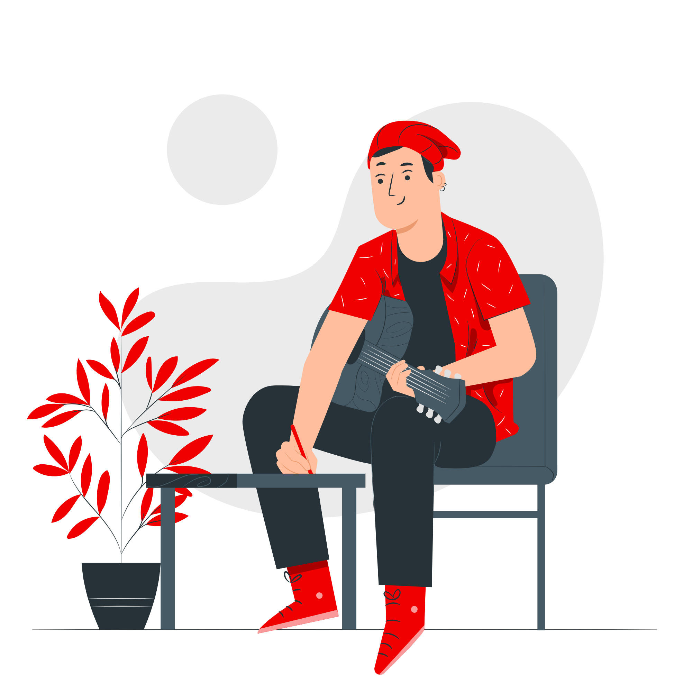

O Feat Up é uma plataforma criada para conectar produtores musicais, promovendo colaborações e facilitando o aprendizado mútuo por meio de projetos compartilhados. Em um mercado musical em constante expansão, a plataforma oferece um ambiente onde profissionais e entusiastas da produção musical podem se encontrar, criar juntos e expandir seus conhecimentos, impulsionando suas carreiras e explorando novas sonoridades.
Através do Feat Up, os produtores podem buscar e encontrar parceiros com interesses e habilidades similares, facilitando a realização de “feats”, ou seja, colaborações musicais em um mesmo projeto. Cada usuário tem um perfil detalhado que inclui suas áreas de expertise, preferências de gênero e principais ferramentas de produção, o que permite encontrar parcerias compatíveis para projetos específicos.
Além disso, a plataforma permite que os usuários enviem e recebam convites para feats, visualizem colaborações pendentes e acompanhem as que já estão em andamento. O sistema de “match” utiliza filtros e um algoritmo personalizado para garantir que cada colaboração seja relevante e vantajosa para ambos os lados.
Com o Feat Up, novos talentos encontram oportunidades de aprendizado com produtores mais experientes, enquanto os veteranos podem expandir sua rede e explorar novas possibilidades criativas. O foco é não só na conexão, mas também no fortalecimento da comunidade de produtores musicais.
